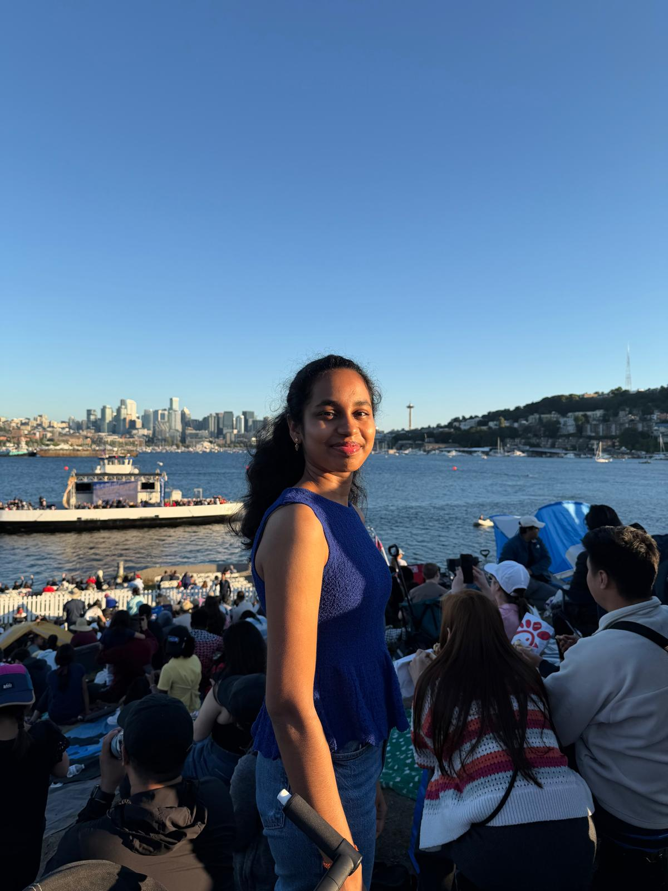

Understanding customer sentiment
Natural language processing and insight discovery through a Costco capstone.
NLP / CUSTOMER ANALYTICSI'm Tejaswi — working across data engineering, analytics, and applied AI to solve practical, interesting problems.

FIG 01 / SEATTLE, WASHINGTON
Work across engineering, analytics, sustainability, and machine learning.
Experience across sustainability analytics, data engineering, reporting, and operational decision support.
Applied natural language processing and customer-feedback analysis to explore actionable business insights.
Worked with data pipelines and visual reporting for research-oriented analytics.
Contributed to data workflows and analytics initiatives, turning raw data into more usable information.
Descriptions are brief first-pass summaries. We'll refine responsibilities and outcomes together.
A cross-section of technical questions I've explored.
Natural language processing and insight discovery through a Costco capstone.
NLP / CUSTOMER ANALYTICSExploring scalable processing, transformation, and clearer data foundations.
PIPELINES / DISTRIBUTED DATATurning complex datasets into interpretable analysis and visual stories.
EXPLORATION / VISUALIZATIONProject titles are editorial placeholders for this visual prototype; we'll replace these with your exact projects and links.
There's more to me than my job titles. This space will grow into a personal journal of interests, places, images, and ideas.
Let's connectAlways curious about how things work — and how they can work better.
MORE PHOTOS & STORIES / COMING LATER